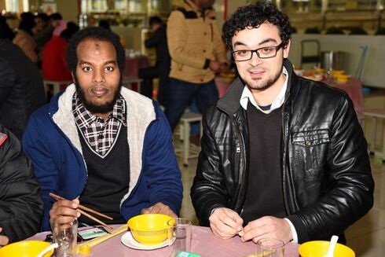
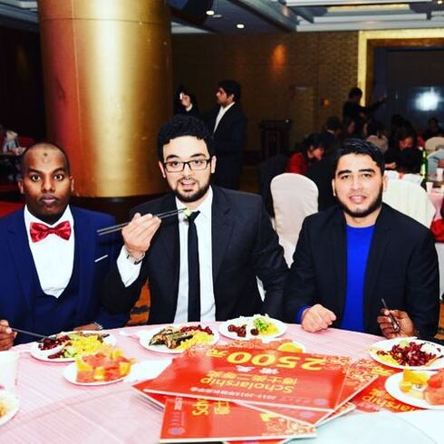
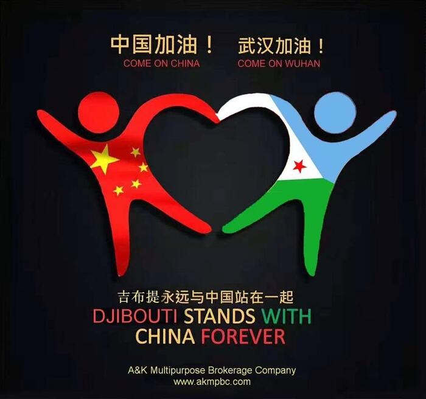

Kader Ali Ibrahim received his B.Sc.
degree from the Djibouti University Institute of Technology (Djibouti, Djibouti) in 2014 and
his M.Sc. degree from Jiangnan University (Wuxi, China) in 2018. He is currently
studying for his Ph.D. degree in the College of Internet of Things Engineering, Jiangnan
University (Wuxi, China) since 2018. His current research interests include system
identification and system modeling.
 Social Activities
Social Activities Self Assessment
Self Assessment
This photo was taken at Jiangnan University on Chinese New Year's Day 2018

This photo was taken at Jiangnan University in June 2018, After Master's Thesis Defense

This photo was taken at Jiangnan University in December 2019, Inauguration of ISA-JU

This photo was taken at Jiangnan University in December 2016, Taihu President Scholarship Awards

This photo was taken at Jiaxing Nanhu in July 2021, Summer Social Practice

This photo was designed by Kader Ali in 2020, Support and highlight the cooperation between Djibouti and China

This photo was taken at Wuxi in November 2016, CREC&E

This photo was taken at Wuxi in November 2016, CREC&E
This photo was taken at Wuxi in November 2016, CREC&E

This photo was taken at Wuxi in November 2016, CREC&E

This photo was taken at Wuxi in December 2017, Wuxi Exhibition Center
This photo was taken at Wuxi 2018, Eid Ceremony
Researcher
Phone: +86 186 5245 7196
Email: kader-ali@vip.jiangnan.edu.cn